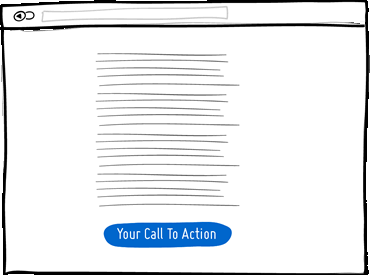
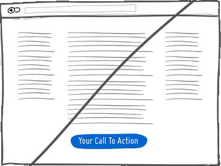
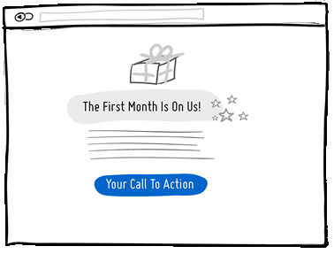
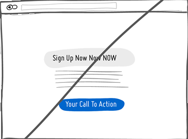
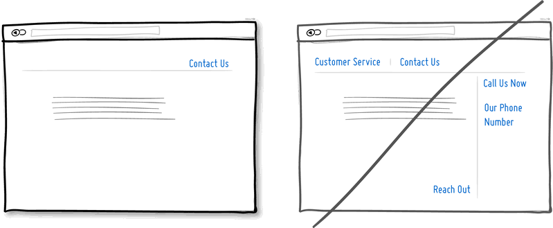
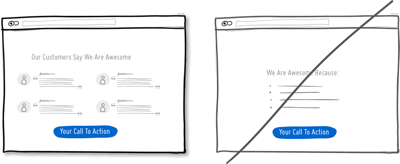
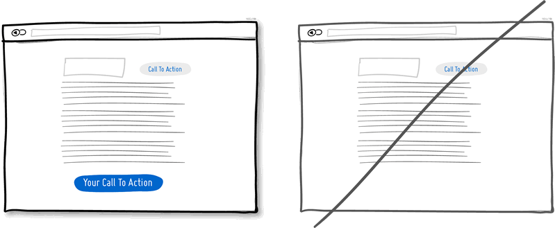

A Good User Interface
has high conversion rates and is easy to use. In other words, it's nice to both the business side as well as the people using it. Here is a running idea list, which
we try on projects.
has high conversion rates and is easy to use. In other words, it's nice to both the business side as well as the people using it. Here is a running idea list, which
we try on projects.
Try A One Column Layout instead of multicolumns.
A one column layout will give you more control over your narrative. It should be able to guide your readers in a more predictable way from top to bottom. Whereas a multi column approach runs some additional risk of being distracting to the core purpose of a page. Guide people with a story and a prominent call to action at the end.Try Giving a Gift instead of closing a sale right away.
A friendly gesture such as providing a customer with a gift can be just that. Deeper underneath however, gifting is also an effective persuasion tactic that is based on the rule of reciprocity. As obvious as it sounds, being nice to someone by offering a small token of appreciation can come back in your favour down the road.Try Merging Similar Functions instead of fragmenting the UI.
Over the course of time, it's easy to unintentionally create multiple sections, elements and features which all perform the same function. It's basic entropy - things start falling apart over time. Keep an eye out for duplicate functionality labelled in various ways, as it puts a strain on your customers. Often, the more UI fragmentation there is, the higher the learning curve which your customers will have to deal with. Consider refactoring your UI once in a while by merging similar functions together. Try Social Proof instead of talking about yourself.
Social proof is another great persuasion tactic directly applicable to increasing conversion rates. Seeing that others are endorsing you and talking about your offering, can be a great way to reinforce a call to action. Try a testimonial or showing data which proves that others are present. Try Repeating Your Primary Action instead of showing it just once.
Repeating your call to action is a strategy that is more applicable to longer pages, or repeating across numerous pages. Surely you don't want to have your offer displayed 10 times all on the same screen and frustrate people. However, long pages are becoming the norm and the idea of squeezing everything "above the fold" is fading. It doesn't hurt to have one soft actionable item at the top, and another prominent one at the bottom. When people reach the bottom, they pause and think what to do next - a potential solid place to make an offer or close a deal. Try Distinct Styles Between Clickable And Selected Items instead of blurring them.
Visual styling such as color, depth, and contrast may be used as a reliable cue to help people understand the fundamental language of navigating your interface: where am I, and where can I go. In order to communicate this clearly to your users, the styles of your clickable actions (links, buttons), selected elements (chosen items), and plain text should be clearly distinct from one another and then applied consistently across an interface. In the visual example, I've chosen a blue color to suggest anything that can be clicked on, and black as anything that has been selected or indicates where someone is. When applied properly, people will more easily learn and use these cues to navigate your interface. Don't make it harder for people by blurring these three functional styles.
Try Recommending instead of showing equal choices.
When showing multiple offers, then an emphasized product suggestion might be a good idea as some people need a little nudge. I believe there are some psychology studies out there which suggest that the more choice there is, then the lower the chances of a decision actually being made and acted upon. In order to combat such analysis paralysis, try emphasizing and highlighting certain options above others.
Try Undos instead of prompting for confirmation.
Imagine that you just pressed an action button or link. Undos respect the initial human intent by allowing the action to happen smoothly first and foremost. Prompts on the other hand suggest to the user that he or she does not know what they are doing by questioning their intent at all times. I would assume that most of the time human actions are intended and only in small situations are they accidental. The inefficiency and ugliness of prompts is visible when users have to perform actions repeatedly and are prompted numerously over and over - a dehumanizing experience. Consider making your users feel more in control by enabling the ability to undo actions and not asking for confirmation where possible.
Try Telling Who It's For instead of targeting everyone.
Are you targeting everyone or are you precise with your audience? This is a conversion idea where you could be explicit about who exactly your product or service is intended for. By communicating the qualifying criteria of your customers, you might be able to actually connect more with them while at the same time hinting at a feeling of exclusivity. The risk with this strategy of course is that you might be cutting yourself short and restricting potential customers. Then again, transparency builds trust.
(Side note: Enjoying the little characters style? Please be sure to check out MicroPersonas.)
Try Being Direct instead of indecisive.
You can send your message with uncertainty trembling in your voice, or you can say it with confidence. If you're ending your messaging with question marks, using terms such as "perhaps", "maybe", "interested?" and "want to?", then most likely you have some opportunity to be a bit more authoritative. Who knows, maybe there is a bit more room for telling people what to do next in the world of conversion optimization.
Try More Contrast instead of similarity.
Making your calls to action be a bit more prominent and distinguishable in relation to the elements surrounding them, will make your UI stronger. You can easily increase the contrast of your primary calls to action in a number of ways. Using tone, you can make certain elements appear darker vs. lighter. With depth, you can make an item appear closer while the rest of the content looks like it's further (talking drop shadows and gradients here). Finally, you can also pick complementary colors from the color wheel (ex: yellow and violet) to raise contrast even further. Taken together, a higher contrast between your call to action and the rest of the page should be considered.
Try Showing Where It's Made instead of being generic.
Indicating where you, your product or service is from says quite a bit subliminally while at the same time moves your communication to a more personal level. Mentioning the country, state or city of origin is surely a very human like way to introduce oneself. If you can do the same virtually then you just might be perceived as a bit more friendly. Often, stating where your product is being made at also has a pretty good chance of making it feel of slightly higher quality. It's a win win.
Try Fewer Form Fields instead of asking for too many.
Human beings are inherently resistant to labor intensive tasks and this same idea also applies to filling out form fields. Each field you ask for runs the risk of making your visitors turn around and give up. Not everyone types at the same speed, while typing on mobile devices is still a chore in general. Question if each field is really necessary and remove as many fields as possible. If you really have numerous optional fields, then also consider moving them after form submission on a separate page or state. It's so easy to bloat up your forms, yet fewer fields will convert better.
Try Exposing Options instead of hiding them.
Each pull down menu that you use, hides a set of actions within which require effort to be discovered. If those hidden options are central along the path to getting things done by your visitors, then you might wish to consider surfacing them a bit more up front. Try to reserve pull down menus for options that are predictable and don’t require new learning as in sets of date and time references (ex: calendars) or geographic sets. Occasionally pull down menu items can also work for those interfaces that are highly recurring in terms of use - actions that a person will use repeatedly over time (ex: action menus). Be careful of using drop downs for primary items that are on your path to conversion.
Try Suggesting Continuity instead of false bottoms.
A false bottom is a conversion killer. Yes, scrolling long pages are great, but be careful of giving your visitors a sense that the page has come to an end somewhere in between sections where it really hasn't. If your pages will scroll, try to establish a visual pattern or rhythm that the user can learn and rely on to read further down. Secondarily, be careful of big gaps in around the areas of where the fold can appear (of course I’m referring to a area range here with so many device sizes out there).
Try Keeping Focus instead of drowning with links.
It’s easy to create a page with lots of links going left and right in the hope of meeting as many customer needs as possible. If however you’re creating a narrative page which is building on towards a specific call to action at the bottom, then think twice. Be aware that any link above the primary CTA runs the risk of taking your customers away from what you’ve been hoping them to do. Keep an eye out on the number of links on your pages and possibly balance discovery style pages (a bit heavier on the links) with tunnel style pages (with fewer links and higher conversions). Removing extraneous links can be a sure way to increase someone’s chances of reaching that important button.
Try Showing State instead of being state agnostic.
In any user interface we quite often show elements which can have different states. Emails can be read or unread, invoices can be paid or not, etc. Informing users about the particular state in which an item is in, is a good way of providing feedback. Interface states can help people understand whether or not their past actions have been successfully carried out, as well as whether an action should be taken.
Try Benefit Buttons instead of just task based ones.
Imagine two simple buttons displayed on a page. One button tells you that it will “Save You Money”, while the other one asks you to “Sign Up”. I’d place my bets that the first one might have a higher chance of being acted on, as a sign up on it’s own has no inherent value. Instead, a sign up process takes effort and is often associated with lengthy forms of some sort. The hypothesis set here is that buttons which reinforce a benefit might lead to higher conversions. Alternatively, the benefit can also be placed closely to where the action button is in order to remind people why they are about to take that action. Surely, there is still room for task based actions buttons, but those can be reserved for interface areas that require less convincing and are more recurring in use.
Try Direct Manipulation instead of contextless menus.
Occasionally it makes sense to allow certain UI elements to be acted upon directly as opposed to listing unassociated generic actions. When displaying lists of data for example, we typically want to allow the user to do something with the items in the list. Clicking on, or hovering over an item in this list can be used to express that a particular item is to be manipulated (deleted, renamed, etc.). Another example of common direct manipulation would be clicking on a data item (say a text based address) which then turns into an editable field. Enabling such interactions cuts through the number of required steps, compared to if the same task was started more generally without the context of the item - since selection is already taken care of. Do keep in mind of course that for generic item-agnostic actions, there is nothing wrong with contextless menus.
Try Exposing Fields instead of creating extra pages.
When creating landing pages that convey value, it can be beneficial to show the actual form fields on the conversion page itself. Merging the sign up form with the landing page comes with a number of benefits in comparison to creating separate multi-page sign ups. First, we are cutting out extra steps from the flow in general and the task at hand takes less time. Secondly, by showing the number of form fields right there, we are also providing the customer with a sense of how long the sign up actually is. This of course is a little easier when our forms are shorter in the first place (which of course they should be if possible).
Try Transitions instead of showing changes instantly.
Interface elements often appear, hide, move, shift, and resize as users do their thing. As elements respond to our interactions, it sometimes is a little easier to comprehend what just happened when we sprinkle in the element of time. A built in intentional delay in the form of an animation or transition, respects cognition and gives people the required time to understand a change in size or position. Keep in mind of course that as we start increasing the duration of such transitions beyond 0.5 seconds, there will be situations where people might start feeling the pain. For those who just wish to get things done quickly, too long of a delay of course can be a burden.
Try Gradual Engagement instead of a hasty sign up.
Instead of asking visitors to sign up immediately, why not ask them to first perform a task through which something of value is demonstrated. During such initial interactions the product can both show off its benefits, as well as can lend itself to personalization. Once users begin to see your product’s value and see how they can make it their own, they will then be more open to sharing with you additional information. Gradual engagement is really a way to postpone the sign up process as much as possible and still allow users to use and customize your application or product.
Try Fewer Borders instead of wasting attention.
Borders compete for attention with real content. Attention of course is a precious resource since we can only grasp so much at any given time. Surely borders can be used to define a space very clearly and precisely, but they also do cost us cognitive energy as they are perceived as explicit lines. In order to define relationships between screen elements which use less attention, elements can also be just grouped together through proximity, be aligned, have distinct backgrounds, or even just share a similar typographic style. When working in abstract UI tools, it’s easy to drop a bunch of boxes everywhere. Boxes however come with a false sense of being immune from the order and unity which governs the rest of the screen. Hence pages with lots of boxes sometimes may tend to look noisy or misaligned. Sometimes it is helpful to throw in a line here and there, but do consider alternative ways of defining visual relationships that are less taxing to attention and your content will come through.
Try Selling Benefits instead of features.
I think this is Marketing 101. People tend to care less about features than they do about benefits. Benefits carry with them more clearly defined value. Chris Guillebeau in "The $100 Startup" writes that people really care about having more of: Love, Money, Acceptance and Free Time, while at the same time wishing for less Stress, Conflict, Hassle and Uncertainty. When showing features, and I do believe that there is still room for them occasionally, be sure to tie them back to benefits where possible.
Try Designing For Zero Data instead of just data heavy cases.
There are cases when you will have 0, 1, 10, 100, or 10,000+ data results which might need to be displayed somehow in various ways. The most common of these scenarios is probably the transition from first time use with zero data towards future use with a lot more data. We often forget to design for this initial case when there is still nothing to display whatsoever, and by doing so we run the risk of neglecting users. A zero data world is a cold place. When first time users look at your app and all it does is show a blank slate without any guidance then you’re probably missing out on an opportunity. Zero data states are perfect candidates for getting users across the initial hurdle of learning by showing them what to do next. Good things scale and user interfaces are no exception.
Try Opt-Out instead of opt-in.
An opt-out strategy implies that users or customers are defaulted to take part in something without having to take any action. Alternatively, there is also the more traditional opt-in strategy that requires people to first take an action in order to take part in or receive something. There are two good reasons why opt-out works better than opt-in. First it alleviates resistance on the path of action, as the user does not have to do anything. Secondly, it’s also a form of recommendation which implies some kind of a norm - “since everyone else takes this as it is, I might also do the same”. Of course the opt-out strategy is often perceived as controversial as there are those sleazy marketers which will abuse it. One such evil is to diminish the readability of the opt-out text, while another is to use confusing text, such as double negatives. Both examples will result in users being less aware of actually signing up for something. Hence to keep the ethics in check, if you do decide to go with an opt-out approach, do make it very clear and understandable to your customers what they are being defaulted into. After all, this tactic has also been used in Europe to save lives.
Try Consistency instead of making people relearn.
Striving for consistency in user interface design is probably one of the most well known principles since Donald Norman’s awesome books. Having a more consistent UI or interaction is simply a great way to decrease the amount of learning someone has to go through as they use an interface or product. As we press buttons and shift sliders, we learn to expect these interaction elements to look, behave and be found in the same way repeatedly. Consistency solidifies the way we learn to interact and as soon as it is taken away, we are then forced back into learning mode all over again. Consistent interfaces can be achieved through a wide possible range of things such as: colors, directions, behaviors, positioning, size, shape, labelling and language. Before we make everything consistent however, please let’s bear in mind that keeping things inconsistent still has value. Inconsistent elements or behaviors come out into attention from the depths of our habitual subconscious - which can be a good thing when you want to have things get noticed. Try it, but know when to break it.
Try Smart Defaults instead of asking to do extra work.
Using smart defaults or pre-filling form fields with educated guesses removes the amount of work users have to do. This is a common technique for helping users move through forms faster by being respectful of their limited time. One of the worst things from an experience and conversion stand point is to ask people for data that they have already provided in the past, repeatedly over and over again. Try to display fields that are preloaded with values to be validated as opposed to asking for values to be retyped each time. The less work, the better.
Try Conventions instead of reinventing the wheel.
Convention is the big brother of consistency. If we keep things similar across an interface, people won’t have to obviously struggle as hard. If on the other hand, we all keep things as similar as possible across multiple interfaces, that decreases the learning curve even further. With the help of established UI conventions we learn to close screen windows in the upper right hand corner (more often than not), or expect a certain look from our settings icons. Of course there will be times when a convention no longer serves purpose and gives way to a newer pattern. When breaking away, do make sure it’s purposefully thought out and with good intention.
Try Loss Aversion instead of emphasizing gains.
We like to win, but we hate to lose. According to the rules of persuasive psychology, we are more likely to prefer avoiding losses than to acquiring gains. This can be applied to how product offerings are framed and communicated. By underlying that a product is protective of a customer’s existing well-being, wealth or social status, such strategy might be more effective than trying to provide a customer with something additional which they don’t already have. Do insurance companies sell the payout that can be gained after the accident or the protection of the things we hold dear to us?
Try Visual Hierarchy instead of dullness.
A good visual hierarchy can be used to separate out your important elements from the less important ones. A visual hierarchy results from varying such things as alignment, proximity, colour, tone, indentation, font size, element size, padding, spacing, etc. When these visual language elements are applied correctly, they can work together to direct and pause people’s attention within a page - improving general readability. A visual hierarchy can be said to generate friction and slows us down from skimming through the full page top to bottom - for the better that is. With a good visual hierarchy, although we might spend a bit more time on the page, the end result should be that we register more items and characteristics. Think of it as as road trip. You can take the highway and get to your destination quicker (bottom of page), or you can take the scenic route and remember more interesting things along the way. Give the eye a place to stop.
Try Grouping Related Items instead of disordering.
Grouping related items together is a basic way of increasing fundamental usability. Most of us tend to know that a knife and a fork, or open and save functions can typically be found more or less together. Related items are just meant to be placed in proximity of each other in order to respect a degree of logic and lower overall cognitive friction. Wasting time looking for stuff usually isn't fun for people.
Try Inline Validation instead of delaying errors.
When dealing with forms and errors, it’s usually better to try to detect if something isn’t correct and show it sooner rather than later. The famous interaction pattern highlighted here of course is inline validation. By showing an error message as it happens (say to the right of the input field), it can be corrected right then and there as it appears in context. On the other hand, when error messages are displayed later on (say after a submit), it forces people to do some additional cognitive work of having to recall what they were doing from a few steps back.
Try Forgiving Inputs instead of being strict with data.
Being more forgiving in terms of user entered data, computers can move one step closer towards becoming a bit more humane. Forgiving inputs anticipates and understands a variety of data formats and thereby makes your UI more friendly. A perfect example of this is when we ask people for a phone number which can be entered in so many different ways - with brackets, extensions, dashes, area codes, and on. Have your code work a bit harder so that your users won’t have to.
Try Urgency instead of timelessness.
Urgency is a persuasion tactic which can be applied in order to make people act now rather than later (or possibly never). It works because it often implies some degree of scarcity, as the thing which is available now might not be available tomorrow. It also works because it touches upon loss aversion in the same way - as we don’t like losing out on opportunities. Urgency might also be one of those strategies that some look down upon as a pushy and dirty way of getting people to act. Nevertheless it’s available as a strategy to use and as long as it’s honest it’s valid. Be careful of creating a false sense of urgency, since when your audience calls you on it, it will backfire.
Try Scarcity instead of abundance.
When there is less of anything, we tend to value it more. Scarcity suggests there was once more of something, today there is less of it, and tomorrow it might shrink yet even further. Think of a wholesale store vs. a boutique one and then look at how their pricing often compares. Then think back to the wholesaler and notice one scarcity strategy that they apply nevertheless, in light of having a wider product offering. Some wholesalers or mega retailers will actually do limited products that are only available until they are bought out, without replenishing the supply. In software, we often forget about scarcity because more often than not, bits and bytes can be so easily duplicated and there is so much abundance with the help of copy-paste. Nevertheless, in the world of UI, scarcity can still be used to show limits or bottlenecks that relate to the real world. Think of the limits behind the number of tickets you can sell to a webinar, the number of clients you can service in a month, or the number physical products you might have before the next batch is produced. All these things can be shown to the user to evoke action while being more informed. Think supply and demand. Think less is more.
Try Recognition instead of recall.
This is a classic principle of design tied strongly to psychology which suggests that it is easier to recognize something existing, as opposed to having to recall it purely from one’s own memory. Recognition relies on some kind of cues or hints which help us by touching our past experience. Recall requires us to probe the depths of our memory all on our own. This might be the reason why sometimes multiple choice questions on exams can be faster to complete than open ended ones. Consider giving users the ability to recognize items which they have been exposed to before, instead of expecting them to remember everything on their own.
Try Bigger Click Areas instead of tiny ones.
Links, forms and buttons can all be made easier to click on if their size is increased. According to Fitt’s Law, we need more time to click on something with a pointing device, the further away it is and/or smaller it is. For this very reason, do consider increasing your form fields, calls to action, and links. Alternatively, it's also possible to keep the visual element looking as is, but instead only increasing its hotspot or clickable area. A popular example of this are text links on mobile devices or within navigation menus, that are stretched with padding.
GoodUI.org is a project by Jakub (@jlinowski) at Linowski Interaction Design, based in Toronto. Write to me.